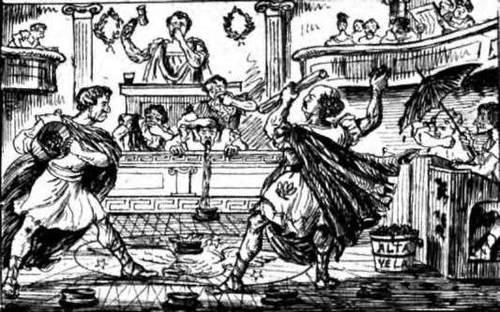

Moralizing Upon The Certain Result Of Vice Presidency. Continued
Description
This section is from the book "Smoked Glass", by Orpheus C. Kerr. Also available from Amazon: Smoked Glass.
Moralizing Upon The Certain Result Of Vice Presidency. Continued
" Hem! " says he, dealing two here and two there, and simultaneously making a pass of two kings and an ace up his coat-sleeve. " Kentucky will play you just one game of Bluff, Mr. Post, to see if her former tailor, A. Johnson, will be acquitted or convicted. If I win, it is in favor of the respondent. If you win, the verdict will be otherwise. You play first, and I 'see' you, and go five cents better".
" Well done, my private Morrissey!" says I, tapping him on the shoulder. " Your manner of deciding a great national case might well be adopted by one of those fastidions Senators whose consciences are said to make them uncertain about their verdict".
Hastily leaping to his feet, and slipping the cards out of sight into a convenient pocket, the Kentucky chap eyed me sorrowfully, and says he, -
" The old rye-crop of Kentucky is greatly retarded and depreciated by the vast quantity of milk and Water daily poured out by the Impeachment Jacobins; and nothing but an acquittal can improve the market".
"You are unduly depressed," says I, sympathetically, "because all the reliable morning journals have been driven by excess of speeches to tear their hair, and predict a future of inexpressible woe and eloquence. Gome with me to the House of Congress, where a guano matinee is now being held. It will cheer your mind; and as we've both got our old clothes on, we needn't mind a little dirt".
Bowing a mute assent, and fervently grasping my hand, the afflicted chap permitted me to lead him as I listed; and we proceeded to that great-national hall of legislation where statesmen are "native and to the manure born." In the gallery were quite a number of spectators, dressed in bad clothes for the occasion, and protected by a barracade of opened umbrellas and upreared benches against the time when the mud should begin to fly. These we joined, and were at once interested in a great scene between the Hon. Anasta Puddle, and the Hon. Mr, Bottler.*
* Paasage-at-arma In the House, between Messrs. Brooks and Butler concerning the Alta Vela (guano island) business.
The Hon. Anasta Puddle threw a handful of guano at the Hon. Mr. Bottler, and says he, "I deem it my duty as a member of the incorruptible Democratic Organization, to charge yonder impure being with the loathsome crime of endeavoring to intimidate the President into giving all the guano known to the birds of the air to certain corrupt parties".
The Hon. Mr. Bottler used both his hands to throw guano all over the Hon. Anasta Puddle, and says he, "This fellow, Puddle, is mad at me because I know about his trying once to swindle one of his partners. He is a. disgusting object".
The Hon. Anasta Puddle hurled a pailful of guano at the Hon. Mr. Bottler, and says he, "I regret to say that I am cognizant of several burglaries committed by this creature, Bottler, and cannot but mourn my further knowledge of his earlier attempt to work domestic misery in the family of a bricklayer. I demand a committee to investigate his subsequent efforts to commit arson".
The Hon. Pignatius Wallowly next arose to protest against a recent newspaper letter of the Hon. Mr. Washwoman; and says he, "The infamous office-beggar to whom I allude has made certain charges against me in a letter, and I hereby hold up the unclean wretch to general loathing. Why, sir, this incredible wallower in infamy comes here with a record reeking from- " (Here the Court allowed the speaker to write the sentence on a slip of paper, as it was unfit for print). "And do we not all know that this polluted reptile is sole owner of the candidate for the next Presidency? Do we not all know that this unparalleled dabbler and frequent betrayer of-" (The Court permitted the speaker to commit the remark to writing, as it would not do for print). "Yet this same gentleman, this same person who, in a game of euchre with his own brother, would use marked cards-"
Hon. Mr. Polltax, Speaker of the House, decided that the last remark was unparliamentary.
The Hon. Mr. Washwoman arose calmly, and says he, " The party may go on all day if he chooses. I scorn to notice the impotent drivel of a-" (Witness was suffered by the Court to pencil the name on a piece of paper, as it was unsuitable for publication). "I have plainly said, in the letter to which he takes exception, that he once fled from his native city under a false name, because he had been detected in-" (The Court directed deponent to write the remainder of the remark on a slip of foolscap, as it was not adapted to public print.) "And now let the party go on".
The Hon. Pignatius was sorry if he had said anything unparliamentary, and demanded a Committee to ascertain what day would be most convenient for the execution of the Hon. Mr. Washwoman. If the proposition was not out of order, he begged leave to invite all present to go out and take the Test-oath with him.*
* Appendix, 5.
Amid the great enthusiasm naturally produced by this pleasant termination of what had been a somewhat agitated debate, the Kentucky Chap and I hurriedly repaired to the nearest bathing establishment, where, after we had carefully bathed, and had the splashes scraped from our coats, we took different paths. In a much improved frame of mind, the pride of Kentucky started toward Pennsylvania Avenue, while I designed a brief stroll about the Capitol grounds for the quieter meditation upon the great truths we had just heard. Plunged in a delicious reverie, I had but commenced my walk, when sounds of loud cheering from the theatre of Impeachment caused me to hastily enter that solemn temple and view the culminating pageant.
The Hon. Thaddeus Bingham had just concluded his touching remarks detrimental to the respondent. He had just finished his scathing exposure of an accidental President whose lack of all decorum in public speaking has justly subjected him to Impeachment by an outraged Congress; and the assembled populace were cheering the consummate artist. Such disagreeable sounds, however, were unseemly in such a place, inasmuch as they awoke thirteen aged Senators from much-needed slumber, and jarred the spectacles from the noses of two venerable counsels for the defence.
The Chief Justice tore off his night-cap and threw it at a deaf chap in the gallery who had not heard the call for Silence, and was still stamping and clapping horribly; and says he, "The police will please remove the galleries, as it is impossible for the Senate to sleep amid such confusion".
Thus, at the mandate of arbitrary power, we were all driven forth from our dormitories into the pitiless air. Amongst the throng Was the Mackerel Chaplain, and says I to him,-
"Who shall think, after such a popular ovation as this to a native orator, that American eloquence is declining?"
"My good young friend," says the ohaplain, shaking his head, "it will ever remain a question in men's minds, whether the late applause was a tribute to native eloquence, or a free people's irrepressible delight at the assured termination of the last of the Impeachment Speeches".
Yours, undecidedly,
Orpheus C. Kerr.
Continue to:
- prev: Letter X. Moralizing Upon The Certain Result Of Vice Presidency
- Table of Contents
- next: Letter XI. Taking A Hopeful View Of The Future Of American Art